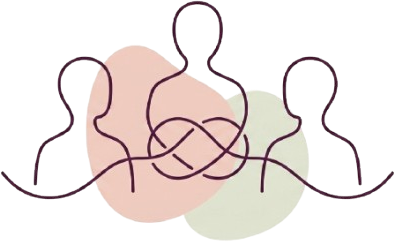

Pourquoi consulter ?Thérapie familiale
Restaurer l'équilibre familial.
Pourquoi consulter ?
La thérapie familiale systémique aide à comprendre et résoudre les dynamiques relationnelles qui peuvent affecter le bien-être des individus et de la famille. Elle permet d'aborder les problèmes non comme des faiblesses individuelles, mais comme des symptômes d'un déséquilibre au sein du système familial.
Parce que la famille est un système où tous les membres sont en interrelation constante, la thérapie familiale s'adresse à la famille entière pour agir sur l'ensemble des relations familiales.
Grâce à des outils spécifiques et des techniques adaptées, elle aide les familles à restaurer un équilibre et à construire des relations plus saines et épanouissantes.
Elle peut être utile lors
- De conflits familiaux
- D'une séparation ou d'un divorce
- D'un deuil
- D'une maladie
- De difficultés relationnelles avec un adolescent
- De tensions entre générations
L'objectif est d'améliorer la communication et de permettre à chacun de retrouver sa place dans le système familial.
Pour comprendre comment je travaille avec les familles, découvrez l'approche systémique.

Consulter en famille
Consultations sur rendez-vous au cabinet de Verrières-en-Anjou, à 15 minutes d'Angers.
Prendre rendez-vous en famille